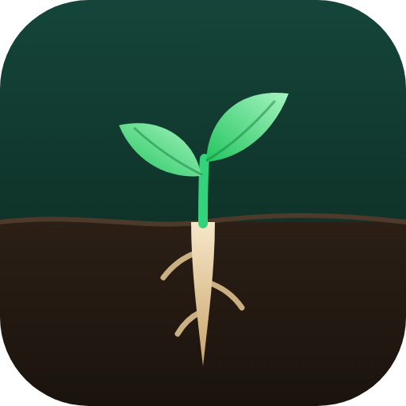

Taproot
Moderation that runs deep.
Moderation & cases
Auto-mod
Welcome & autoroles
Reaction roles
Reminders & announcements
Custom commands
A staff dashboard in its own channel, plus familiar ! commands in chat.